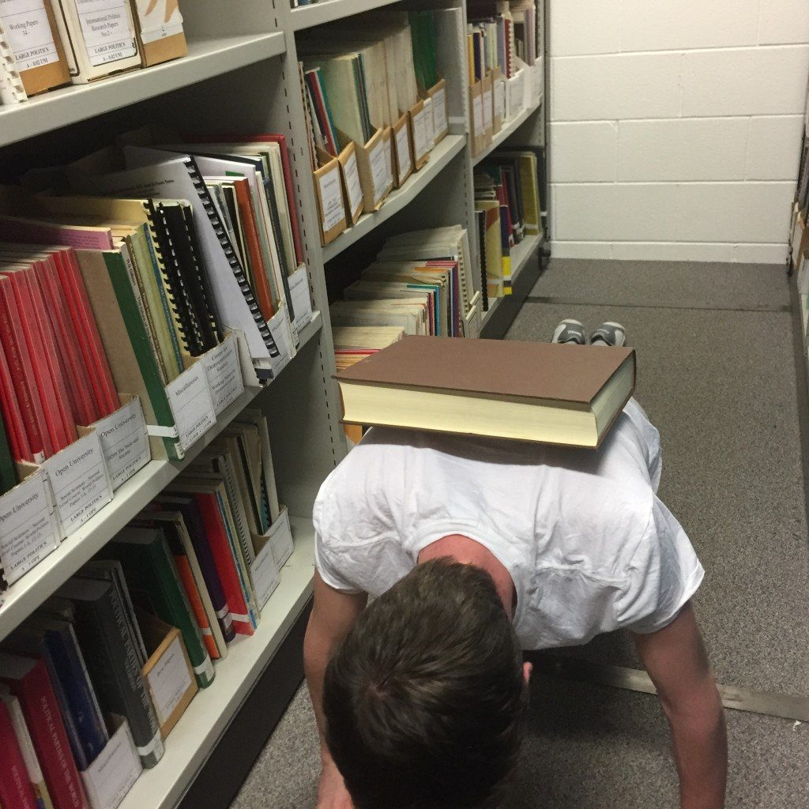
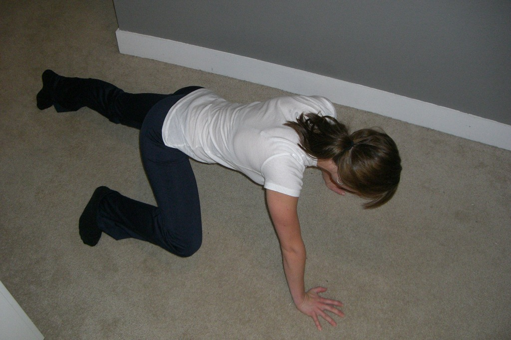
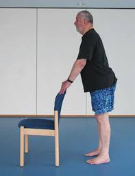
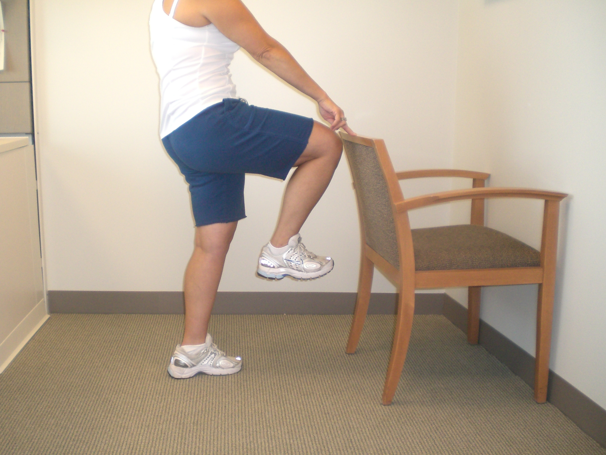
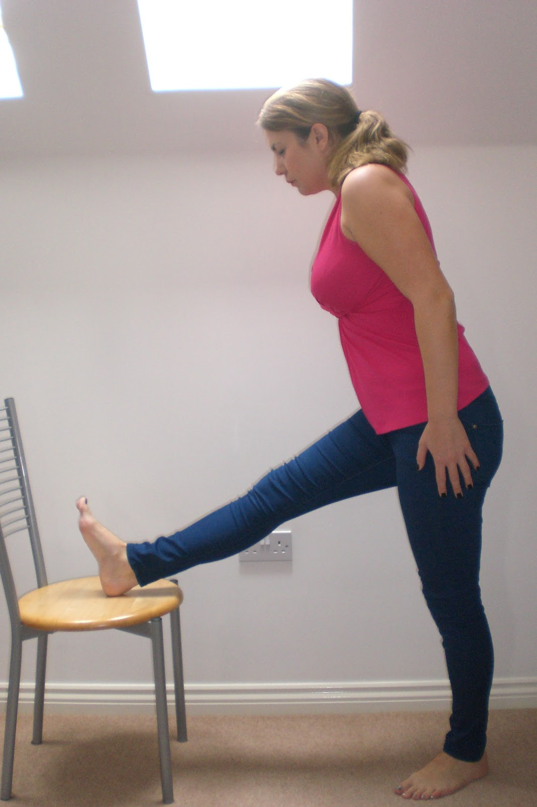
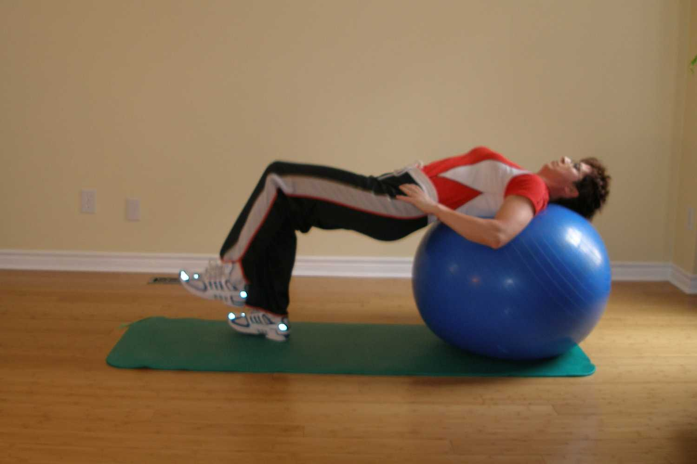
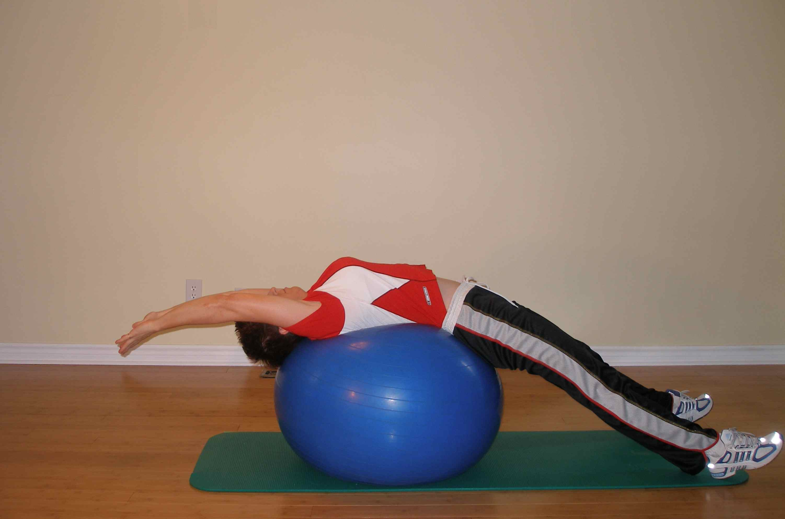
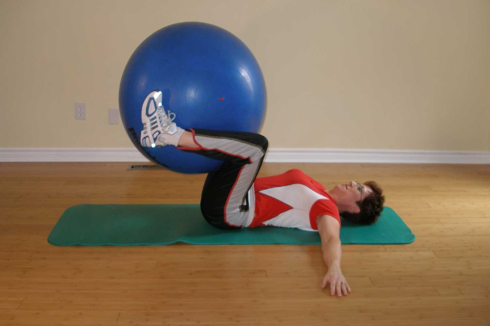

⑴ Het idee van snel zijn wordt maar al te vaak in verband gebracht met schoonheidsidealen, eetstoornissen, dopaminepsychose en een neoliberaal streven naar kapitaal voor zelfverbetering. Hoe fout kan het zijn!
⑵ Gezond en bloeiend zijn is in het belang van het collectief. En het verenigingsleven als verlengstuk van dit streven is een plek voor culturele expressie, een schat voor esthetische mensen en een bron van identiteit.
⑶ Wees een sportieve specerij, gezond en zweterig!
Voer nooit oefeningen of rustige activiteiten uit waarbij u voorover buigt, gaat liggen of op enigerlei wijze naar de grond kijkt. Dit is een onderdrukkende erfenis van de fitnessindustrie, bedoeld om je zelfrespect tot op de grond te verlagen.


De stoel staat symbool voor passiviteit en loonslavernij.
Naast het dieptepunt waar we in onze sport in worden gedwongen, is ook de aanwezigheid van de stoel zeer problematisch. Vermomd als een evenwichtspunt in onze oefeningen, is de stoel eigenlijk de poging van het bedrijfsleven om ons het plezier dat we krijgen van fysieke activiteit te laten associëren met kantoorwerk. Ze willen op een Pavloviaanse manier dopamine en een gevoel van zelfrealisatie manipuleren, terwijl je eigenlijk een langzame dood sterft op hun werkplek.



Verlaat de Orb's Orbit!
Pilates werd uitgevonden als een kruk voor een toch al hinkend economisch systeem. De bal is een globalistische mascotte, een snittificatie en verfraaiende vorm van een wereldwijd systeem dat oneerlijk verdeelt. Je wordt aangemoedigd om je kont tegen rubber te zetten en lucht te blazen, heb je een meer perverse allegorie gehoord voor hoe de supermensen de bevolking van onze aardbol hun laatste lantaarn laten zien?



De kelder in de behoeftenpiramide is ook een terras.
De interactie tussen het fysieke en het mentale, ja, het wordt in kaart gebracht als algemeen bekend. Maar verwar de fysica niet voor de grondige, bottom-up constructie. Het begrip, het cognitieve geloof, is de basis voor hoe we ons fysieke bestaan waarnemen. Daarom moet u uw toestand op een nieuwe manier leren zien.